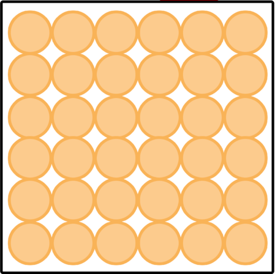
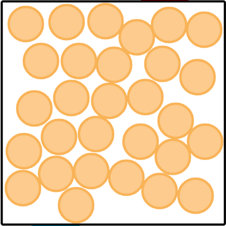

Modèle microscopique d’un gaz
Compréhension du modèle
Visionner les deux vidéos suivantes en prenant des notes :
-
Rappeler quels sont les trois états physiques que l’eau peut prendre.
-
Qu’est-ce qui caractérise un solide, du point de vue macroscopique ?
-
Qu’est-ce qui caractérise un liquide, du point de vue macroscopique ?
-
Qu’est-ce qui caractérise un gaz, du point de vue macroscopique ?
-
Qu’est-ce qui caractérise un solide, du point de vue microscopique ?
-
Qu’est-ce qui caractérise un liquide, du point de vue microscopique ?
-
Qu’est-ce qui caractérise un gaz, du point de vue microscopique ?
-
Pourquoi peut-on regroupe les liquides et les gaz sous l’appellation « fluide » ?
-
Quel phénomène permet de valider le modèle microscopique d’un gaz ? Décrire ce phénomène (on pourra visionner la deuxième vidéo si la première n’est pas suffisamment claire).
Simulation d’une marche au hazard à deux dimensions
Le programme à
cette adresse
simule un déplacement, aléatoire, dans un plan, de trois tortues (commenter l’instruction tortue1.hideturtle() et dé-commenter l’instruction tortue1.shape("turtle") pour faire apparaître la tortue).
-
Lancer la simulation. Qu’est-ce qui provoque son arrêt ?
-
Quelle est l’action des instructions comprises entre les lignes 38 et 45 ?
-
Résumer la condition d’arrêt de la boucle
TantQue(while) qui débute à la ligne 56. -
Que contient la variable
dx1une fois l’instruction de la ligne 63 exécutée ? Se document sur la fonctionrandintdu modulerandomsi nécessaire. -
À quoi servent les instructions des ligne 65 et 66 ?
-
À quoi sert l’instruction de la ligne 67 ?
-
En quoi ce programme simule-t-il le mouvement brownien.
À retenir
- Solides : 
- Liquides : 
- Gaz :
Quels sont les paramètres qui permettent de décrire le comportement d’un gaz
Utiliser la simulation à cette adresse
-
Quels sont les paramètres que cette simulation permet de faire varier ?
-
Quel paramètre, non modifiable dans cette simulation, semble dépendre de la variation des paramètres modifiables ?
-
Afficher le nombre de collisions entre molécules. Augmenter la température du gaz.
- Comment varie la pression ?
- Comment varie le nombre de collisions ?
-
Augmenter la quantité de matière du gaz.
- Comment varie la pression ?
- Comment varie le nombre de collisions ?
-
Diminuer le volume du gaz.
- Comment varie la pression ?
- Comment varie le nombre de collisions ?
-
Existe-t-il une corrélation entre la valeur du paramètre pression et le nombre de collisions ?